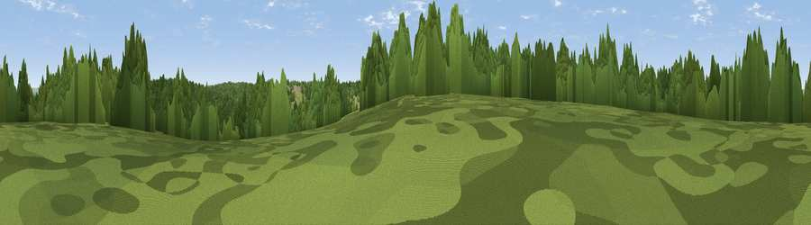

Viewpoint near Tilgate
#44514 in England · top 90% of its area beats it · near TilgateWhere it is
The exact computed spot (TQ 28475 33475). Click the marker for map links.
The view, rendered

A 360° render of this exact spot computed from the terrain model, tree cover and land cover — summer colours, afternoon light, calibrated against photographs of famous viewpoints. Real trees, hedges and buildings will differ in detail.
The panorama
Grey silhouette: terrain skyline in each direction (720 bearings, Earth curvature and refraction included). Dashed green: skyline with trees (+15 m) and buildings (+8 m) as obstacles. Blue strip: how far the ground is visible on each bearing.
Where the view opens
Wedge length = distance to the farthest visible ground on that bearing (vegetation-aware). Rings at 10, 25 and 50 km.
What fills the view
73% woodland · 16% grassland · 8% built-up · 2% cropland
Angular shares of the visible panorama (visual magnitude), not map area. Landscape diversity 0.36 (0–1 Shannon).
Key numbers
More beautiful places nearby
The staircase of upgrades: each row has a higher view potential than everything closer. Driving times are estimates from straight-line distance, calibrated against real road routing — check an actual route before setting out.
| Place | Direction | Drive | Score |
|---|---|---|---|
| Viewpoint near Handcross | S · 3 km | ~7 min | 49.2 |
| Viewpoint near Turners Hill | ENE · 4 km | ~9 min | 49.9 |
| Viewpoint near Turners Hill | ENE · 6 km | ~13 min | 51.6 |
| Viewpoint near Kingsfold | W · 11 km | ~21 min | 55.0 |
| Viewpoint near Capel | NW · 15 km | ~27 min | 55.6 |
| Dry Hill | ENE · 17 km | ~30 min | 55.7 |
| Viewpoint near Coldharbour | NW · 17 km | ~30 min | 56.5 |
| Viewpoint near Coldharbour | NW · 17 km | ~30 min | 71.3 |
51.08621, -0.16704 · source: screening · position refined by local search. Computed location — check access rights before visiting.